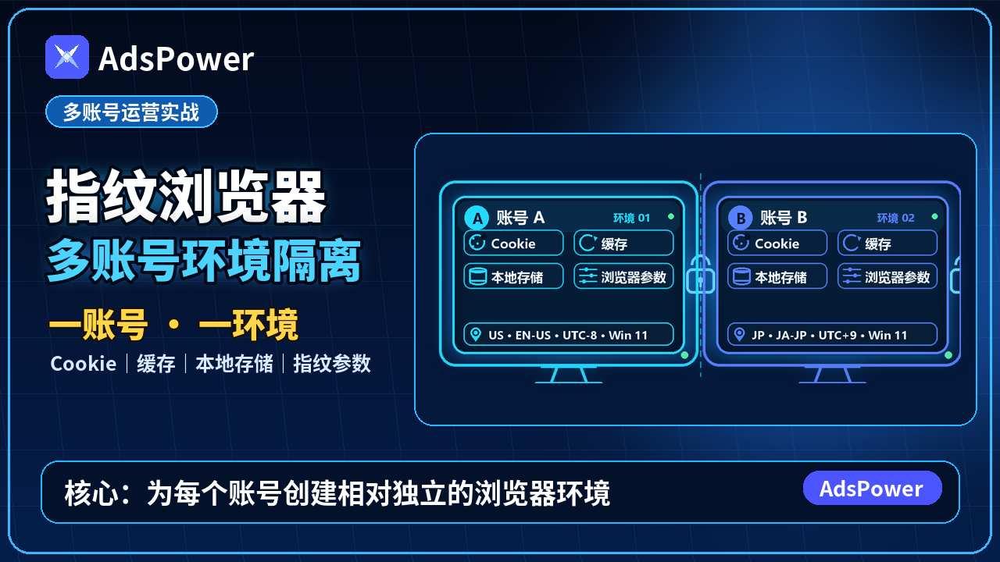

🎁 AdsPower + Webshare：跨境多账号环境搭建指南

本期要点： 简单认识浏览器指纹、Cookie 与住宅 IP，并介绍如何将 AdsPower 指纹浏览器和 Webshare 住宅 IP组合使用，为 TikTok、亚马逊等跨境业务创建相互独立且稳定的网络环境。
🔗 本期相关服务推荐
🎬 本期视频同款：AdsPower 指纹浏览器
本期视频使用的多账号浏览器环境管理工具，可为不同账号创建相互独立的浏览器配置。
- 👉 点击注册 AdsPower
- 邀请码／优惠码：
ChrisTalk1334
🎁 ChrisTalk 粉丝专属福利
- 套餐优惠自动叠加
通过上方邀请链接注册后，优惠码 ChrisTalk1334 将自动生效：
- 首次订阅 30 天套餐额外优惠 10%
- 其他套餐 额外优惠 5%
- 该优惠可以与 AdsPower 官方套餐折扣叠加
例如：90 天套餐官方折扣为 8.5 折，叠加优惠码后，结算优惠可达到 8 折。
- 赠送 10 环境周卡会员
新用户通过邀请链接或邀请码 ChrisTalk1334 注册后，可自动获得 10 环境周卡会员。
注册完成后，请打开 AdsPower 客户端，在左下角找到 “免费试用”，手动激活即可开启。
优惠会自动绑定，最终折扣金额、赠送权益、适用套餐及活动期限，请以 AdsPower 官方结算页面和客户端实际显示为准。
🎬 本期视频同款：Webshare 静态住宅 IP
本期视频搭配 AdsPower 使用的静态住宅 IP，可为不同浏览器环境配置相对稳定的网络出口。
具体套餐、可选地区、IP 类型及价格请以 Webshare 官方页面为准。
🔍 浏览器指纹检测
可用于查看当前浏览器暴露的设备参数、网络信息及浏览器指纹特征。
⚡ 极速Cloud 机场推荐
这是我少有见到的精品线路机场。据商家线路说明，提供电信 CN2 GIA、联通 AS9929/10099、移动 CMIN2 等优化线路，在我的使用环境中整体表现不错。
套餐覆盖年付、季付、月付及新人体验套餐，价格相对实惠。如果页面当前仍有中秋活动，可尝试使用优惠码 zqth；优惠是否有效、适用套餐及期限，请以商家公告和结算页面为准。
- 邀请码：
zwTTkkF7 - 👉 点击注册极速Cloud
💻 搬瓦工 VPS 推荐
如果你更倾向于自行搭建节点，希望拥有独立服务器及更高的配置自由度，也可以考虑搬瓦工 VPS。
💳 国际支付方式
🌐 国际虚拟卡
- Bybit U 卡申请：
- 👉 Bybit U 卡（台湾）
- 👉 Bybit U 卡（哈萨克斯坦）
🏦 实体银行卡
- 招商银行万事达人民币普卡（实体借记卡）：
- 👉 前往招商银行官方渠道申请
打开招商银行 App，搜索“万事达普卡”，按照页面提示提交申请。
🔍 IP 质量检测工具
🧬 什么是浏览器指纹？
每个人的指纹都具有独特性，可以用来识别身份。浏览器同样会向网站提供一组设备和网络信息，这些信息组合起来，就形成了所谓的 浏览器指纹。
常见的浏览器指纹信息包括：
- 操作系统与浏览器版本
- 屏幕分辨率、字体和语言
- 时区、地理位置与设备性能
- Canvas、WebGL 和音频特征
- IP 地址、DNS 与 WebRTC 信息
单项信息看起来很普通，但组合之后，网站便可能判断不同账号是否来自相同或相似的设备环境。
🍪 Cookie 和浏览器指纹有什么区别？
Cookie 是网站保存在浏览器中的小型数据，通常用于记录登录状态、网站偏好和访问会话。清除 Cookie 后，这些记录可能会消失。
浏览器指纹则来自设备与浏览器本身。即使清除了 Cookie，只要设备参数和网络环境高度相似，网站仍可能识别出环境之间的关联。
因此，多账号业务需要关注的不只是 Cookie，还包括浏览器配置和网络出口的一致性。
🛡️ AdsPower 指纹浏览器的作用
AdsPower 可以为不同业务账号创建相互独立的浏览器环境。每个环境拥有单独的 Cookie、本地存储和浏览器参数，避免不同账号的数据直接混在一起。
可以简单理解为：
一个浏览器环境，就是一台相对独立的“虚拟设备”。
这类环境适合用于管理已经获得授权的跨境业务账号，并可配合团队权限与环境分组进行统一管理。
🌐 为什么还需要住宅 IP？
指纹浏览器主要解决浏览器环境隔离问题，而住宅 IP 负责提供相对稳定的网络出口。
Webshare 住宅 IP 可以与 AdsPower 浏览器环境配合使用，使账号的 IP 地区、时区和浏览器语言保持合理一致。建议遵循：
一个账号对应一个独立环境，并尽量使用稳定且地区匹配的 IP。
频繁更换国家、城市或网络线路，反而容易造成登录环境异常。
🔗 AdsPower 配合 Webshare 的基本思路
- 在 AdsPower 中创建新的浏览器环境。
- 将 Webshare 提供的代理地址、端口和认证信息填入代理设置。
- 根据 IP 地区调整时区、语言等环境参数。
- 检查 IP、DNS 和 WebRTC 是否存在异常。
- 确认环境一致后，再登录对应的业务账号。
📱 常见应用场景
TikTok 业务矩阵
可按照品牌、地区或内容团队划分独立环境，用于管理经过授权的 TikTok 账号，减少 Cookie 与浏览器数据混用，并方便团队协作。
亚马逊店铺运营
对于拥有多个合规店铺、品牌或站点的运营团队，可以分别建立独立环境，降低员工共用浏览器所造成的数据混乱。
广告与本地化测试
通过不同地区的网络环境，检查广告落地页、网站语言、商品价格及地区展示是否正常。
⚠️ 使用注意事项
指纹浏览器和住宅 IP 只是环境管理工具，并不能消除平台风险。使用时仍需遵守 TikTok、亚马逊等平台规则以及当地法律法规，不应用于虚假注册、欺诈、批量养号或绕过平台安全机制。 本文内容仅供技术交流，请遵守当地法律法规及相关服务条款。涉及账户、交易和资金安全时，请自行核对节点出口、平台政策与风险。